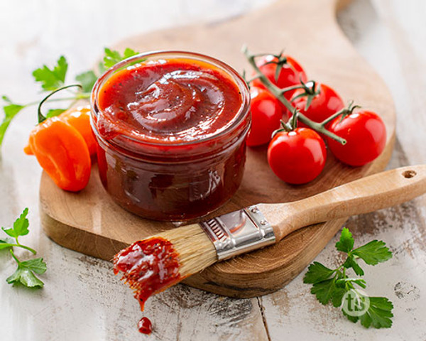

Honey Habanero BBQ Sauce

Description:
A sweet and spicy sauce that compliments just about anything you want to put it on!
Ingredients: (Makes ~2 Standard Bottles)
- 6-8 Habanero Peppers
- 2 Cups Ketchup
- 2 Cups Red Wine Vinegar
- 2 Cups Honey
- 2 Tablespoons Garlic Powder
- 2 Tablespoons Onion Powder
- 2 Tablespoons Worcestershire Sauce
- 2 Tablespoons Black Pepper
- 2 Tablespoons Salt
- (Optional) Cayenne Pepper if you live on the edge!
Steps:
- Add habanero peppers,red wine vinegar and ketchup to a blender, blend on high for about one minute
- Add the contents of the blender and the rest of the ingredients to a sauce pot and simmer on low for about 30 minutes. Consistency should be smooth and thick
- Remove from heat and allow to fully cool before storing in an airtight container in the refrigerator for up to a month
Other Pages